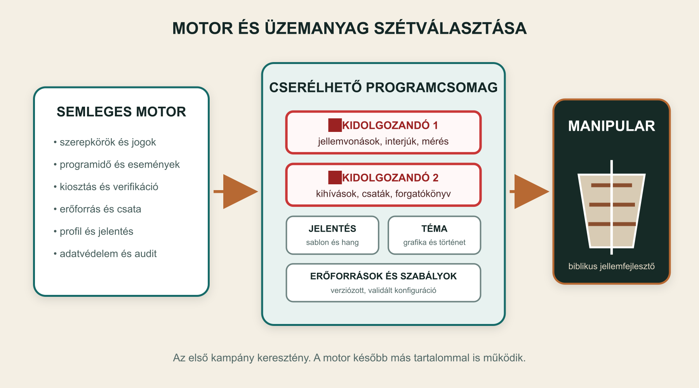
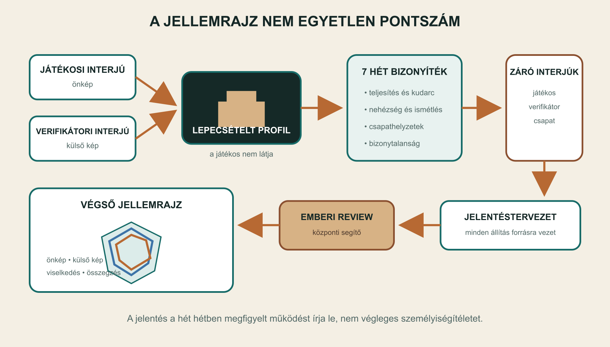
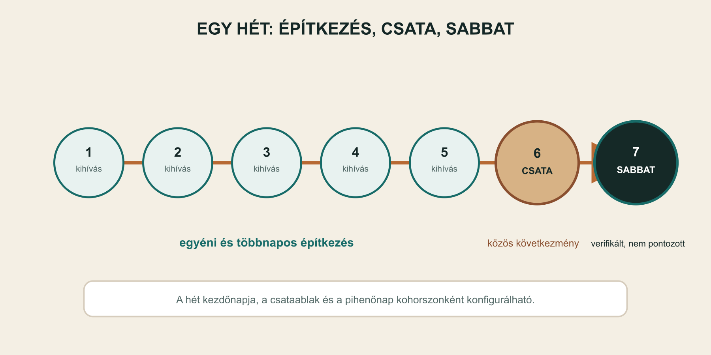

Vezetői összefoglaló
A Manipular egy hét héten át tartó, kooperatív, gamifikált jellemfejlesztő program 25–45 éves, házas, hívő vagy a hittel ismerkedő férfiak 3–4 fős, önként szerveződő csapatai számára. Nem facilitátor vezeti: az alkalmazás méri fel a kiinduló helyzetet, osztja ki a kihívásokat, tartja a heti ritmust, biztosítja az ellenőrzés keretét, vezeti a hadjáratot és állítja össze a záró értékelés tervezetét. Egyidejűleg 5–10 csapat fölött 1–2 központi segítő felügyeli az elakadásokat, a kivételeket és a jelentések jóváhagyását.
A program első tartalmi és vizuális világa keresztény, biblikus és igealapú. A játék kerettörténete a künoszkephalai hadjáratból merít: a rugalmas római manipuláris hadrend a merev makedón falanx ellen küzd. A történet hadtörténeti ihletésű arcade metafora, nem történelmi szimuláció. A személyes fegyelem adja az egységek erejét, az együttműködés működteti az alakzatot, a rugalmas alkalmazkodás pedig hadászati előnnyé válik.
A termék ígérete visszafogott és ellenőrizhető:
Segít tisztábban meglátni, hogyan működsz jelenleg, és megmutatja, mi változott benned a hét hét során.
A Manipular nem diagnosztizál, nem minősít véglegesen, és nem garantál személyiségváltozást. A belépő interjú egy kezdeti hipotézist ad, a kihívások pedig viselkedési bizonyítékokat gyűjtenek. A záró jelentés azt írja le, hogyan működött a játékos a program hét hete alatt, milyen mintázatok ismétlődtek, hol tért el az önképe a külső megfigyeléstől, és milyen következő lépések lehetnek hasznosak.

A koncepció egy mondatban
A Manipular egy mobilközpontú PWA-ra épülő, alkalmazás által vezetett kooperatív hadjárat, amely egy rejtett belépő jellemprofil, kurált kihívások, verifikátori ellenőrzés és csapatesemények alapján a program végén bizonyítékokra visszavezethető egyéni és csapatjellemrajzot ad.
Miért érdemes elkészíteni?
- A jellemfejlesztést nem elvont tananyagként, hanem hétköznapi cselekvések soraként kezeli.
- Az önértékelést külső, a játékost ismerő verifikátor nézőpontjával egészíti ki.
- A kooperáció és a közös következmények valós társas helyzeteket teremtenek.
- A játékos hét hétig nem látja a mögöttes pontszámokat, ezért kevésbé tud a kívánt eredményre rájátszani.
- A kihívások sikere, részleges sikere és kudarca konkrét példát ad a záró jellemzéshez.
- A keresztény program tartalma lecserélhető, mert a motor nem égeti be sem a jellemvonásokat, sem a kérdéseket, sem a történetet.
1. A kiinduló probléma
1.1 Az önismeret gyakran elszakad a viselkedéstől
Egy kérdőív megmutathatja, hogyan látja magát valaki, de keveset mond arról, hogyan működik, amikor fáradt, amikor nincs kedve, amikor mások számítanak rá, vagy amikor egy kudarc következménye a csapatot is érinti. A Manipular ezért a belépő önértékelést nem végső igazságnak, hanem kiinduló feltételezésnek tekinti.
1.2 A fejlődéshez ritmus és külső visszajelzés kell
A jó szándék gyakran nem válik rendszeres cselekvéssé. A program hét hétre állandó ritmust ad: öt építkező nap, egy közös csata és egy sabbat. A játékos mellett egy általa választott verifikátor is végig jelen van, és a privát egyéni feladatokról végleges ellenőrzési döntést hoz.
1.3 A csapat felerősíti a valós működést
Az egyéni kudarc először a játékos személyes erőforrását csökkenti, majd annak elfogyása után a közös készletet terheli. A csapat látja, ki okozta a levonást, de a privát feladat részleteit nem. Ez újabb jellemhelyzetet teremt: a társak támogatnak, megoldást keresnek, közömbösek maradnak vagy hibáztatnak. A reakció a csapatprofil része lehet.
1.4 A megfigyelés maga is beavatkozás
A program belső metaforája a „kinyitott doboz”: amikor a játékos elkezdi figyelni saját működését, már változik is. Emiatt a Manipular nem választja szét mereven a mérést és a fejlesztést. A kihívás egyszerre gyakorlat és adatforrás, a záró értékelés pedig ezt a kettősséget nyíltan kezeli.
2. Célcsoport és programkeret
2.1 Elsődleges célcsoport
- 25–45 éves férfiak;
- házasok;
- hívők vagy a keresztény hittel ismerkedők;
- önként vagy más javaslatára csatlakoznak, de a részvételhez saját kifejezett beleegyezésük kell;
- 3–4 fős, lehetőleg már meglévő bizalmi kapcsolatokból szerveződő csapatban indulnak;
- vállalják a hét héten át tartó napi és heti ritmust;
- választanak egy csapaton kívüli, őket jól ismerő verifikátort.
2.2 Nem célcsoport
Az MVP nem terápiás, klinikai, krízisintervenciós vagy házassági tanácsadó szolgáltatás. Nem alkalmas arra, hogy mentális állapotot diagnosztizáljon, alkalmasságot igazoljon, munkahelyi vagy egyházi minősítést adjon, illetve a részvételt külső fél kikényszerítse. A jellemrajz nem használható rangsorolásra vagy mások feletti döntés igazolására.
2.3 Kohorsz és működtetés
Az első működési cél egyszerre 5–10 csapat, azaz 15–40 játékos és ugyanennyi verifikátor. A csapatok közös kohorsznapon indulnak, és ugyanabban a heti történeti fejezetben járnak, de egymás eredményét nem látják. Az MVP-ben nincs csapatok közötti ranglista, verseny vagy kohorszszintű együttműködés.
Az egész kohorsz fölött 1–2 központi segítő dolgozik. Nem facilitálnak napi foglalkozásokat, és nem olvashatják szabadon a személyes adatokat. Az elakadásokat, inaktivitást, szüneteket és a záró jelentések jóváhagyását kezelik.
3. A függetlenség elve
3.1 A motor nem azonos az üzemanyaggal
A rendszer legfontosabb architekturális elve, hogy a motor független marad a betöltött tartalomtól. A motor kezeli a szerepköröket, a programidőt, a feladatállapotokat, a kiosztást, a verifikációt, a játékbeli erőforrásokat, a jelentés-előkészítést és a jogosultságokat. A programcsomag adja meg, hogy mit jelent mindez egy konkrét programban.
3.2 Cserélhető programcsomag
A programcsomag legalább az alábbiakat tartalmazza:
- a jellemvonások száma, neve és definíciója;
- az egyéni és csapatdinamikai tengelyek;
- a játékosi és verifikátori belépő és záró interjúk;
- az értékelési és bizonytalansági szabályok;
- a címkézett kihíváskönyvtár;
- a heti történetek és csataforgatókönyvek;
- az erőforrások és azok játékbeli hatása;
- a jellemzéssablon, a hangnem és az engedett állítástípusok;
- a bibliai vagy más források;
- a lokalizált szövegek;
- a vizuális és gamifikációs prezentáció.
Az első csomag biblikus, keresztény és igealapú. A motor ettől még később más számú jellemvonással, más kérdésekkel, más világnézeti kerettel és teljesen más történeti témával is használható.
3.3 Verziózás
Az MVP programcsomagja technikai admin által szerkesztett, verziózott és sémával ellenőrzött fájlokból áll. Egy elindított kohorsz végig ugyanahhoz a csomagverzióhoz van rögzítve. A későbbi módosítások csak új kohorszra érvényesek. Vizuális tartalomszerkesztő nem része az MVP-nek.
🟥 KIDOLGOZANDÓ 1 – JELLEMVONÁSRENDSZER. A hét egyéni jellemvonás, a csapattulajdonságok, az interjúk és az értékelési módszer szakirodalmi és biblikus megalapozása még nincs kész. E nélkül a programcsomag nem tekinthető tartalmilag indíthatónak.
🟥 KIDOLGOZANDÓ 2 – KIHÍVÁS- ÉS FORGATÓKÖNYVTÁR. A jellemvonásokhoz illesztett teljes héthetes kihíváskészlet, alternatívák, verifikátori feladatok és heti csaták még nincsenek kidolgozva. Ez a munkacsomag az első eredményére épül.
4. Szerepkörök és felelősségek
4.1 Játékos
A játékos kitölti a belépő és záró interjút, elfogadja a csapatszövetséget, teljesíti és beküldi a kihívásokat, részt vesz a csapatdöntésekben és a heti csatákban, valamint betartja a biztonsági és beleegyezési kereteket. A program alatt nem látja a jellemvonáscímkéket, a pontszámokat vagy a diagramokat.
4.2 Verifikátor
A verifikátort a játékos szabadon választja házastárs, rokon, barát, mentor vagy lelki vezető közül. Csapattag nem lehet ugyanannak a játékosnak a verifikátora. A verifikátor:
- külön kitölti a belépő és záró interjút;
- látja a rá tartozó privát kihívások teljesítési feltételeit;
- véglegesen elbírálja az egyéni beküldéseket;
- látja a rejtett jellemvonásokat és az ideiglenes trendeket;
- küldhet bátorítást vagy strukturált visszajelzést;
- nem módosíthat pontszámot és az MVP-ben nem oszthat saját kihívást.
4.3 Csapat
A csapat 3–4 fővel indul. Minden tag látja a közös erőforrásokat, a közös döntéseket, a csapattagok hozzájárulását és az egyéni kudarc miatt keletkező közös levonás forrását. A privát kihívás tartalmát, bizonyítékát és indoklását nem látja.
4.4 Heti csapatfelelős vagy parancsnok
A program eseményenként kijelölhet vagy rotálhat vezetőt. A heti csapatfelelős rögzíti a közös csata eredményét, amelyet minden jelenlévő játékos külön megerősít. Egyes csatahelyzetekben a kijelölt vezető időre dönt, kérhet tanácsot, vagy a forgatókönyv szerint tanács nélkül kell döntenie.
4.5 Központi segítő
A központi segítő az operatív kivételeket kezeli. Látja a csapatok haladását, aktivitását, erőforrásállapotát, a függő verifikációkat, a szünetkérelmeket és a jelentés-jóváhagyási sort. Nem böngészheti szabadon a nyers interjúkat és privát bizonyítékokat. A jelentés felülvizsgálatakor csak a felhasznált állításokhoz szükséges forrásrészletekhez fér hozzá. Minden érzékeny adatmegtekintés naplózódik.
4.6 Programadminisztrátor
Az adminisztrátor kohorszokat, szerepköröket, csomagverziókat és alapbeállításokat kezel. A technikai admin tölti fel a validált programcsomagot. Az MVP-ben nem szerkeszt tartalmat vizuális felületen.
| Információ | Játékos | Saját verifikátor | Csapattárs | Központi segítő |
|---|---|---|---|---|
| Saját kihívás tartalma | igen | igen | privát esetben nem | alapból nem |
| Saját bizonyíték | igen | igen | nem | csak jelentésforrásként |
| Ideiglenes egyéni profil | nem | igen | nem | nem |
| Egyéni erőforrás-vesztés neve és összege | igen | igen | igen | igen |
| Nyers interjúválasz | saját válasz | saját válasz | nem | nem |
| Végső egyéni jelentés | igen | igen | nem | jóváhagyáskor |
| Csapatprofil a program alatt | nem | nem | nem | nem |
| Végső csapatjelentés | igen | nem | igen | jóváhagyáskor |
5. Belépés és indulási kapu
5.1 Fiók és meghívás
Az MVP jelszó nélküli e-mailes magic linket és Google OpenID Connect belépést támogat közös hitelesítési rétegen. A játékos létrehoz egy csapatot vagy meghívóval csatlakozik, majd meghívja a saját verifikátorát. A rendszer ellenőrzi a szerepkör-ütközést.
5.2 Beleegyezés és alkalmassági szűrők
A játékos kifejezetten elfogadja, hogy keresztény tartalmú programba lép, verifikátora hozzáfér a neki szánt adatokhoz, és a csapat látni fog bizonyos játékbeli következményeket. A rendszer nem diagnózisokat kér, hanem kiosztást befolyásoló alkalmassági kapcsolókat:
- nagy fizikai terhelés vállalható-e;
- böjt vagy étkezést érintő gyakorlat vállalható-e;
- nyilvános közösségimédia-megjelenés vállalható-e;
- házastársat vagy gyermeket bevonó feladat vállalható-e;
- utazást, pénzköltést vagy speciális eszközt igénylő feladat vállalható-e;
- van-e egyéb személyes határ.
Ezek az adatok nem módosítják a jellemértékelést, és a csapat vagy a verifikátor nem látja őket. Házastársat érdemben érintő, beleegyezésköteles feladatnál az MVP-ben a játékos nyilatkozik arról, hogy előzetes beleegyezést kapott. A közvetlen harmadik fél általi jóváhagyás későbbi tervezési dilemma.
5.3 Csapatszövetség
Indulás előtt minden tag elfogad egy rövid közös működési szövetséget:
- a privát feladat részleteit nem követelik egymástól;
- egyenes kritika adható, sértegetés és megszégyenítés nem elfogadott;
- kudarc esetén először támogatást és megoldást keresnek;
- súlyos konfliktusnál segítséget kérhetnek;
- a konfliktusban mutatott működés része lehet a csapatértékelésnek.
5.4 A teljes indulási kapu
A csapat csak akkor indulhat, ha:
- minden játékos belépett és elfogadta a program feltételeit;
- a csapat 3–4 főből áll;
- minden játékosnak van csapaton kívüli verifikátora;
- minden játékos és verifikátor kitöltötte a belépő interjút;
- minden játékos beállította az alkalmassági szűrőket;
- mindenki elfogadta a csapatszövetséget;
- a csapat kiválasztotta a heti közös alkalom idősávját.
Az MVP-ben a központi segítő nem írhatja felül ezt a kaput hiányzó verifikátor vagy interjú esetén.
6. A jellemrajz és az értékelési modell
6.1 Négy nézőpont
Jellemvonásonként négy, egymástól megkülönböztetett eredmény készül:
- a játékos önértékelése;
- a verifikátor külső értékelése;
- a hét hét kihívásaiból származó viselkedési eredmény;
- ezek konfigurált összesítése.
A pókhálódiagramon a négy görbe külön megjeleníthető. Az eltérés nem hiba: az önkép, a külső kép és a megfigyelt viselkedés közötti különbség önálló felismerés.

6.2 Lepecsételt kiinduló kép
A belépő interjú eredménye elkészül, de a játékos számára lepecsételt állapotban marad. A rendszer használja a kiosztáshoz, a játékos azonban nem látja sem a pontszámot, sem a jellemvonásneveket, sem azt, melyik kihívás melyik tulajdonságot érinti.
A verifikátor külön edzői felületen látja az ideiglenes jellemvonás-trendeket. Ez nem a végleges, megfogalmazott jellemrajz, hanem operatív támpont a bátorításhoz és az ellenőrzéshez.
6.3 Viselkedési bizonyíték
Minden kihívás egy elsődleges és szükség szerint több másodlagos jellemvonáshoz adhat súlyozott bizonyítékot. A későbbi értékelésben számíthat:
- a feladat nehézsége;
- a teljesítés, részleges teljesítés vagy kudarc;
- a verifikáció erőssége;
- az ismétlődés és időbeli következetesség;
- a körülmény és az alkalmasság;
- a csapathelyzetben mutatott viselkedés;
- a bizonyíték mennyisége és változatossága.
Egyetlen látványos siker vagy kudarc nem mozdíthatja el aránytalanul a profilt. A rendszer minden tengely mellett jelzi a bizonyíték mennyiségét és az értelmezés bizonytalanságát. A pontos képlet a jellemvonásrendszer részeként kidolgozandó.
6.4 Adaptív, de nem reduktív kiosztás
A motor nem kizárólag a legalacsonyabb pontokra céloz. A kiosztás kiegyensúlyozza:
- a fejlesztendő területeket;
- a játékos által választott általános fókuszt;
- a meglévő erősségek használatát;
- a csapat aktuális szükségletét;
- a korábbi kihívások eredményét;
- a változatosságot és az ismétlések kerülését.
6.5 Csapatjellemrajz
A csapat külön, rejtett fejlődési profilt kap. A csapatdinamikai tengelyek a közös kihívásokból, a döntésekből, a veszteségekre adott reakciókból, a teherviselésből és a rövid heti reflexiókból épülnek. A játékosok a program alatt csak a játékbeli erőforrásokat látják; a csapatdiagram és a szöveges értékelés a végén nyílik meg.
7. A héthetes hadjárat
7.1 Heti ritmus
Minden hét hét napból áll:
- öt építkező és elővédharc-nap, főleg egyéni kihívásokkal;
- egy személyes közös alkalom és csata;
- egy kötelező sabbat vagy pihenőnap.
A hét kezdőnapját, a csata napját, a pihenőnapot és az időzónát a kohorsz konfigurációja adja. Az első keresztény csomag ajánlhat vasárnaptól szombatig tartó ritmust, de a motor ezt nem égeti be.

7.2 A sabbat szerepe
A hetedik nap nem maradék idő és nem felzárkózási nap. Önálló tanítás: a játékos tudatosan félreteszi a teljesítménykényszert, és figyelmet ad Istennek, a családjának, a kapcsolatainak és a pihenésnek. A programcsomag rövid igei keretet és sabbatvállalást adhat.
A sabbat kötelező és verifikált, de nem pontozott. Nincs jutalom vagy büntetés, és a rendszer nem minősíti a hit vagy a pihenés „minőségét”. A verifikátor megfigyelhető kérdésekre válaszolhat: megtartotta-e a játékos a vállalt határt, jelen volt-e a családjával, képes volt-e félretenni a szokásos munkát.
7.3 Kampányív
Az első hat hét kisebb összecsapásokkal építi a sereget. A hetedik hét közös alkalma a döntő künoszkephalai csata. A korábbi eredmények, erőforrások és csapatdöntések mind hatnak a végkimenetelre.
A heti csaták között lehet előre megírt, megnyerhetetlen helyzet. A játékosok ezt csak az utólagos feldolgozásban tudják meg. Az eleve elvesztésre tervezett csata nem rontja automatikusan a jellemértékelést; a rendszer azt figyeli, hogyan dolgozott és hogyan reagált a csapat. A teljes hadjárat is elveszíthető. Vereség, költséges győzelem és döntő győzelem egyaránt lehetséges, de minden befejező résztvevő megkapja a jóváhagyott záró jelentését.
7.4 Kohorszritmus
Az 5–10 csapat együtt indul és ugyanabban a heti fejezetben jár. Az egyéni és csapatkihívások személyre szabottak lehetnek, a heti történeti téma közös. Az MVP-ben a csapatok nem látják egymás eredményét.
8. A kihívásrendszer
8.1 A kihívás értelmezési tartománya
A kihívás nem egységes időtartamú teendő. Lehet:
- egyszeri cselekedet;
- adott napra szóló szerepvállalás;
- mennyiségi vagy időtartam-cél;
- egész napos gyakorlat;
- egész hetes szabály;
- kapcsolati esemény;
- nyilvános vállalás;
- többnapos előkészítés, amely a csatában zárul;
- egyéni, verifikátori vagy csapatfeladat.
Illusztratív példák lehetnek egy régi barát felhívása, egy hitről vagy háláról szóló nyilvános bejegyzés, egy böjti nap, egy fizikai mennyiségi cél, egy házastárssal szervezett közös program vagy egy egész hétre szóló hétköznapi korlátozás. Ezek nem a végleges kihíváskönyvtár elemei, és csak a biztonsági és beleegyezési szabályok teljesülésekor használhatók.
8.2 Kötelező metaadatok
Minden kihívás legalább az alábbi címkéket és szabályokat kapja:
- elsődleges és másodlagos jellemvonás;
- csapatdinamikai hatás;
- célcsoport és előfeltételek;
- időtartam, gyakoriság, kezdés és határidő;
- egyéni, páros vagy csapatszint;
- fizikai intenzitás;
- nyilvánossági és kapcsolati érzékenység;
- harmadik fél beleegyezésének szükségessége;
- eszköz-, helyszín-, idő- vagy költségigény;
- teljesítési mező és verifikációs feltétel;
- nehézség és súly;
- játékbeli jutalom és kudarc-következmény;
- heti csatához vagy történeti ponthoz való kapcsolat;
- kompatibilis alternatívák.
8.3 Kurált könyvtár
Az MVP kizárólag előre megírt és jóváhagyott kihívásokból választ. Az AI nem találhat ki valós időben új fizikai, kapcsolati, nyilvános vagy lelki gyakorlatot. A feladat előre engedélyezett tartományban paraméterezhető, de a jelentésíró AI nem léphet át a könyvtár szabályain.
8.4 Kiosztási folyamat
- A motor kiszűri az alkalmassági és biztonsági okból tiltott elemeket.
- Kizárja a nem megfelelő időzítésű, előfeltételű vagy ismétlődő feladatokat.
- Pontozza a jelölteket a rejtett profil, a korábbi eredmények, a csapatigény és a heti történet alapján.
- A legjobb jelöltek közül kontrollált véletlennel választ.
- Alapesetben egy konkrét feladatot oszt ki; a programcsomag egyes helyzetekben 2–3 egyenértékű opciót engedhet.
- A kiosztás oka naplózódik, de a játékos számára a jellemvonáscímke rejtett marad.
8.5 Kihíváscsere
Normál csere két módon lehetséges:
- a verifikátor jóváhagyja;
- a játékos személyes többletpontot vált be.
Egészségi kockázat, lelkiismereti probléma, hiányzó harmadik fél beleegyezése vagy más súlyos személyes határ esetén a játékos azonnal, büntetés nélkül visszautasíthatja a feladatot. Alkalmatlanság esetén a rendszer megfelelő alternatívát keres. Ezek a kivételek nem szolgálhatnak a jellemértékelés negatív bizonyítékául.
8.6 Beküldés és bizonyíték
Az MVP a következő bizonyítékformákat tárolja:
- teljesítve jelölés;
- számérték, időtartam vagy ismétlésszám;
- rövid szöveges reflexió;
- opcionális URL;
- verifikátori döntés és megjegyzés.
Fénykép-, videó- és hangfeltöltés nincs az MVP-ben. A nyers bizonyíték a jelentés jóváhagyását követő megőrzési idő végén törlődik.
8.7 Verifikáció
A beküldés után a verifikátor választ: teljesítve, részben teljesítve, nem igazolható vagy nem teljesítve. Az MVP-ben döntése végleges, nincs fellebbezés. A jutalom addig csak függőben jelenik meg, és nem használható fel a csatában.
Ha a verifikátor késik, a játékos nem kap büntetést, de a függő jutalom nem válik költhetővé. A verifikátor emlékeztetőt kap, ismétlődő késésnél a központi segítő értesül. Tartós inaktivitás esetén új verifikátor választható. Korábbi függő feladatot csak akkor bírálhat el, ha a megőrzött bizonyíték alapján ténylegesen megítélhető; különben az ügy jutalom és büntetés nélkül zárul.
8.8 Határidő
Az MVP egyszerű szabályt használ: határidő után a kihívás sikertelen, és életbe lép a megadott következmény. Nincs utólagos bepipálás vagy pótfeladat. Helyreállító kihívás és részleges erőforrás-visszaszerzés későbbi irány.
9. Játékmechanika és taktika
9.1 Rejtett érték és látható valuta
A jellempontszám nem játékvaluta. Nem költhető, nem adható át, és a játékos a program alatt nem látja. Ettől különül el:
- a személyes érdempont, amely kihíváscserére vagy később kisebb taktikai előnyre költhető;
- többféle közös hadjárati erőforrás, amelyek a csata lehetőségeit alakítják.
Az első kampány lehetséges közös erőforrás-kategóriái a morál, készlet, felderítés és harckészség vagy kohézió. A pontos nevek, korlátok és hatások a programcsomagban állnak.
9.2 Kudarc és közös következmény
Sikertelen egyéni kihívásnál először a játékos személyes erőforrása csökken. Ha az nem elegendő, a fennmaradó levonás a csapat közös készletét terheli. A csapat látja az érintett játékos nevét és a levonás összegét, de a privát feladat részleteit nem.
A rendszer nem szégyeníti meg a játékost, de nem rejti el a közös következményt. A csapat reakciója új helyzetet nyit, amely strukturált reflexióval a csapatprofil részévé válhat.
9.3 Taktikai erőforrás-költés
A csapat a csata előtt dönthet arról, mit használ fel azonnal, mit tartalékol, és melyik gyengeséget ellensúlyozza. A döntési mód forgatókönyvenként lehet:
- többségi szavazás;
- egyhangú döntés;
- kijelölt vezető döntése;
- időzített vezetői döntés;
- tanácskérés engedélyezve vagy tiltva;
- csapatjavaslat után vezetői végső döntés;
- határidő utáni automatikus következmény.
Háromfős csapatnál két, négyfős csapatnál három azonos szavazat ad többséget. Döntetlennél vagy időtúllépésnél az eseményben kijelölt parancsnok dönthet. A döntési folyamat maga is viselkedési adat.
9.4 Csapatcsata
A heti csata elsősorban személyes alkalom. Egy kijelölt készülék mutatja a közös állapotot, minden játékos a saját telefonján szavaz és erősíti meg részvételét. A heti csapatfelelős rögzíti a közös eredményt, amely akkor végleges, amikor minden jelenlévő tag megerősítette. A csapat részleges sikert is elérhet, miközben az egyéni részvétel külön megmarad.
Az MVP nem tartalmaz videóhívást vagy csapatchatet. A szabad kommunikáció személyesen vagy a csapat meglévő külső csatornáján történik.
10. Verifikátor mint fejlődési szövetséges
10.1 Alapszerep
A verifikátor nem semleges mérőműszer, hanem a játékost jól ismerő külső megfigyelő. Az MVP-ben értékel, igazol és strukturáltan bátorít. Folyamatos trendnézete miatt észreveheti, hol van szükség nagyobb figyelemre, de nem módosíthatja közvetlenül a motort vagy a pontszámot.
10.2 Opcionális páros fejlesztési modul
Későbbi, külön bekapcsolható modulban a verifikátor maga is kaphat feladatokat, például közös beszélgetést, támogatási gesztust vagy a játékossal együtt végzett gyakorlatot. Ez különösen értékes lehet házastársi kapcsolatban, de nem lehet az alapverifikáció feltétele.
A modul előtt külön ki kell dolgozni:
- a kétoldalú beleegyezést;
- a meglepetésfeladatok határát;
- a visszautasítás módját;
- a kapcsolati biztonságot;
- azt, hogy a páros feladat torzítja-e a verifikátori ítéletet.
10.3 Későbbi edzői beavatkozások
Nem MVP-funkció, hogy a verifikátor kérhesse egy jellemvonás erősebb figyelembevételét, nehézségemelést vagy más feladatformát. Ezek csak stabil értékelési modell és pilotadatok után kerülhetnek be.
11. Szünet, kiesés és kilépés
11.1 Egyéni szünet
Az egyéni szünethez a csapattöbbség és a központi segítő jóváhagyása kell. Jóváhagyás után nincs új kihívás vagy büntetés, az elvárások az aktív létszámhoz igazodnak, az addigi eredmények megmaradnak.
11.2 Csapatszünet
Teljes csapatszünethez minden játékos és a központi segítő jóváhagyása kell. A kampánynaptár megáll, majd ugyanonnan folytatódik. A jóváhagyási idő alatt visszamenőleges büntetés nem keletkezik.
11.3 Végleges kilépés
Játékos vagy verifikátor bármikor végleg kiléphet, ehhez nem kell csapatengedély. A kilépés nem okoz új levonást. A játékos személyes adatainak törlését kérheti, és befejezetlen programból nem készül teljes jellemrajz.
A csapat 3–4 fővel indul, két aktív játékossal még átskálázva befejezheti a kampányt. Egyetlen játékosnál a csapatkampány lezárul. Új tag csak az első hét végéig csatlakozhat.
12. Zárás és útravaló
12.1 Zárási kapu
A végső csata után:
- a játékos kitölti a záró önértékelést;
- a verifikátor ettől függetlenül kitölti a záró értékelést;
- a csapattagok kitöltik a rövid záró csapatértékelést;
- a rendszer elkészíti az egyéni és csapatjelentés tervezetét;
- a központi segítő megvizsgálja a szöveget és a forrásnyomokat;
- jóváhagyás után egyszerre nyílnak meg a diagramok és a jelentések.
Az MVP nem ad ki hiányzó verifikátori vagy csapatértékeléssel készült teljes profilt.
12.2 Az egyéni jelentés tartalma
A cél 3–5 oldalas, konkrét és használható útravaló. Javasolt szerkezete:
- honnan indult a játékos az önértékelés és a verifikátor szerint;
- hogyan alakult a hét jellemvonás a viselkedési adatok alapján;
- hol egyezett és hol tért el az önkép, a külső kép és a megfigyelt működés;
- mely kihívások szolgáltatnak erős példát;
- milyen csapathelyzetekben mutatott erőt vagy elakadást;
- min dolgozott sokat, és hol maradt kevés bizonyíték;
- következő lépések, konkrét gyakorlatok és biblikus útravaló.
A jelentés fogalmazhat például úgy, hogy egy adott kihívásban a játékos nem tudta meghaladni a korábbi mintáját, de ezt csak rögzített eseményre hivatkozva teheti. Nem állíthat motivációt, belső okot vagy végleges jellemtulajdonságot pusztán egy eredményből.
12.3 Konfigurálható jellemzéssablon
A programcsomag állítja be:
- a fejezetszerkezetet és terjedelmet;
- a hangnemet és megszólítást;
- a pontszámok értelmezését;
- a kötelező és tiltott állítástípusokat;
- a bibliai hivatkozások szabályait;
- a tanácskategóriákat;
- a játékos és verifikátor számára látható részeket;
- a konkrét események idézésének módját.
12.4 AI és emberi jóváhagyás
A pontszámokat és eseményeket determinisztikus rendszer számolja. A szöveggeneráló komponens csak rögzített adatokból dolgozhat, minden konkrét állításhoz forrásnyomot kell adnia, és nem diagnosztizálhat. A központi segítő szerkesztheti vagy eltávolíthatja a megfogalmazást, de a rögzített eredményt nem írhatja át észrevétlenül.
Az egyéni és csapatjelentés a PWA-ban olvasható és PDF-ként letölthető.
13. Központi működtetés
13.1 Segítői munkafelület az MVP-ben
Az operatív felület mutatja:
- kohorszok és csapatok állapotát;
- indulási kapuk hiányait;
- heti előrehaladást;
- aktív, szünetelő és kilépett résztvevőket;
- függő és késő verifikációkat;
- csataidőpontokat és elmaradásokat;
- szünetkérelmeket;
- segítségkéréseket;
- jelentéstervezeteket és jóváhagyási sort;
- auditált érzékeny adatmegtekintést.
Részletes hatásanalitika és program-dashboard nem MVP-funkció. Az eseménymodell azonban már az első verziótól elemzésre alkalmas, hogy később részvételi, működési és minőségi mutatók készülhessenek.
13.2 Értesítések
Az MVP e-mailt és opcionális PWA push értesítést használ:
- meghívás és belépés;
- új kihívás;
- verifikációs kérés;
- nyitott szavazás vagy vezetői döntés;
- közelgő csata;
- veszélybe kerülő határidő;
- záró interjú és jelentés elkészülte.
A felhasználó csendes időszakot állíthat be. SMS és külső üzenetküldő-integráció későbbi irány.
14. Adatvédelem, bizalom és biztonság
14.1 Adatminimalizálás
A rendszer csak a program működéséhez szükséges adatot gyűjti. Az alkalmassági szűrő nem kér diagnózist. Médiafájl nem kerül a rendszerbe. A csapat nem lát privát bizonyítékot. A központi segítő hozzáférése célhoz kötött és naplózott.
14.2 Megőrzés és törlés
- A nyers interjúválaszok és bizonyítékok a program végéig, a jelentés jóváhagyásáig és az azt követő alapértelmezett 30 napos ellenőrzési időig maradnak meg.
- A végső jelentés letölthető, az alkalmazásban korlátozott ideig érhető el.
- A játékos bármikor kérheti fiókja és személyes adatai törlését.
- Anonimizált programstatisztika csak külön hozzájárulással őrizhető meg.
- A megőrzési idők telepítési beállítások, nem a vallási programcsomag részei.
14.3 Biztonsági határ
Fizikai, böjti, nyilvános vagy kapcsolati kihívás csak megfelelő címkével, előfeltétellel, beleegyezési szabállyal és alternatívával kerülhet a könyvtárba. A biztonsági vagy lelkiismereti visszautasítás nem igényel verifikátori engedélyt és nem büntethető.
14.4 Jogi és szakmai ellenőrzés
A részletes adatkezelési tájékoztató, hozzájárulási szöveg, gyermekeket érintő feladatok szabálya, egészségügyi kizárások és az AI-jellemzés jogi kerete külön szakmai ellenőrzést igényel az éles pilot előtt. Ez nem helyettesíti a két tartalmi munkacsomagot, hanem implementáció előtti megfelelési kapu.
15. MVP-platform és technikai irány
15.1 PWA
Az MVP telefonra optimalizált, alkalmazásbolt nélkül használható PWA központi háttérrendszerrel. Böngészőből is teljes értékű, kezdőképernyőre telepíthető. Online-first: új kihíváshoz, beküldéshez, verifikációhoz és csapatdöntéshez internet kell. Teljes offline eseménysor és későbbi szinkron nincs az MVP-ben.
15.2 Felületi hangnem
A napi játék, térkép, tábor és csata retro-arcade római hadjárati stílust kap. Az interjúk, adatvédelmi felületek és jelentések visszafogott, komoly és nyomtatható vizuális rendszert használnak. Az alapvető hozzáférhetőség – olvasható kontraszt, szemantikus vezérlők, billentyűzetes kezelés és csökkentett mozgás tisztelete – már az MVP minőségi követelménye.
15.3 Lokalizáció
Az alkalmazás minden felületi és programtartalmi szöveget i18n-rétegen keresztül kap. Az első kiadás csak magyar nyelvű. További nyelvek fordítási és tartalom-ellenőrzési munkát igényelnek, de nem követelnek motormódosítást.
15.4 Technikai komponensek nagyvonalakban
- reszponzív PWA kliens;
- központi API és perzisztencia;
- szerepkör- és jogosultságkezelés;
- programcsomag-betöltő és séma-validátor;
- interjú- és értékelési szolgáltatás;
- kihíváskiosztó és eseménymotor;
- verifikációs workflow;
- csapat- és csatamotor;
- értesítési szolgáltatás;
- jelentés-előkészítő, AI-szövegező és emberi jóváhagyási folyamat;
- audit- és adatmegőrzési szolgáltatás.
Konkrét technológiai stack, felhőszolgáltató, adatbázis és AI-modell kiválasztása a későbbi scoping része.
16. Az MVP határa
16.1 Benne van
- kohorsz- és csapatlétrehozás;
- 3–4 fős önként szerveződő csapatok;
- játékos, verifikátor, központi segítő és admin szerepkör;
- magic link és Google-belépés;
- teljes indulási és zárási kapu;
- konfigurált hét jellemvonás és csapatprofil;
- rejtett belépő profil és verifikátori trendnézet;
- kurált, címkézett kihíváskönyvtár;
- személyre szabott kiosztás kontrollált véletlennel;
- verifikátori végleges döntés;
- pontért vagy verifikátori jóváhagyással történő csere;
- több közös erőforrás és taktikai döntés;
- hét heti fejezet, csaták és végső vereség lehetősége;
- sabbat verifikáció pontozás nélkül;
- egyéni és csapatszünet;
- központi operatív felület és jelentésjóváhagyás;
- magyar PWA, e-mail és opcionális push;
- egyéni és csapatjelentés, PDF-export;
- adatmegőrzés, törlés és auditnapló.
16.2 Nincs benne
- valós idejű AI-kihívásgenerálás;
- vizuális programcsomag-szerkesztő;
- beépített csapatchat vagy videóhívás;
- teljes offline mód;
- algoritmikus csapattársítás;
- kohorszverseny vagy kohorsz-kooperáció;
- személyes pontok átadása vagy veszteség átvállalása;
- pótfeladat és utólagos teljesítés;
- verifikátori fellebbezés;
- verifikátor által kért trait-fókusz vagy nehézségmódosítás;
- aktív páros fejlesztési modul;
- harmadik fél közvetlen, alkalmazáson belüli hozzájárulása;
- részletes analitikai dashboard;
- SMS és külső üzenetküldő-integráció;
- többnyelvű tartalom.
17. Definition of Ready a scoping körhöz
A koncepció működési értelemben scopingra kész, ha a jelen dokumentum döntéseit elfogadjuk, és a két piros munkacsomag elkészül. A későbbi technikai scoping bemenetei:
- jóváhagyott szerepkör- és láthatósági mátrix;
- jóváhagyott heti és teljes kampányfolyamat;
- jóváhagyott kihívás-életciklus és verifikáció;
- jóváhagyott erőforrás- és csatadöntési keret;
- jóváhagyott adatmegőrzési és emberi jelentéskapu;
- verziózott programcsomag-séma tervezete;
- elkészült jellemvonásrendszer és interjúcsomag;
- elkészült, biztonságilag átnézett kihívás- és forgatókönyvtár;
- jogi, adatvédelmi és tartalombiztonsági ellenőrzési terv;
- elfogadott MVP feature-lista és függőségi sorrend.
18. A két kiadandó munkacsomag
🟥 Munkacsomag 1 – Jellemvonásrendszer és mérési keret
Cél: olyan teljes, biblikusan és szakirodalmilag indokolt első programmodell létrehozása, amely pontosan hét egyéni jellemvonást és a hozzájuk kapcsolódó csapatdinamikai tengelyeket tartalmazza.
Kötelező kimenet:
- hét jellemvonás neve, egyértelmű definíciója és határa;
- annak indoklása, miért tekinthető a célcsoport számára alapvetőnek;
- bibliai és szakirodalmi forrásjegyzék;
- pozitív, túlhasznált és hiányos megjelenés leírása;
- megfigyelhető hétköznapi viselkedések;
- játékosi és verifikátori belépő és záró kérdéskészlet;
- a válaszskálák és a pontozás elve;
- önkép–külső kép eltérésének értelmezése;
- viselkedési bizonyíték súlyozásának kerete;
- bizonytalansági és minimális bizonyítékszabályok;
- csapatdinamikai tengelyek és mérési kérdések;
- a jelentéssablon számára használható értelmezési és tanácsadási keret;
- tiltott, túlzó vagy diagnosztikus állítások listája.
Elfogadási feltétel: a modell minden eleme megfigyelhető viselkedéshez kapcsolható, a játékosi és verifikátori kérdések nem puszta szó szerinti másolatok, az eredmény nem állít klinikai validitást, és a keret alkalmas a második munkacsomag címkézésére.
🟥 Munkacsomag 2 – Kihíváskönyvtár és héthetes forgatókönyv
Függőség: csak az első munkacsomag stabil változata után véglegesíthető.
Cél: teljes, egy hét héten át futtatható, kellően változatos és biztonsági alternatívákat tartalmazó első kampánycsomag létrehozása.
Kötelező kimenet:
- elegendő egyéni kihívás minden jellemvonáshoz, több nehézségi és formai változatban;
- többnapos és egész hetes kihívások;
- verifikátori értékelési kritériumok;
- opcionális, későbbi páros verifikátori feladatok elkülönített listája;
- csapatépítő és csapatdinamikát próbára tevő kihívások;
- hét heti történeti fejezet;
- hét csataforgatókönyv, köztük legalább egy tudatosan megnyerhetetlen csata;
- a döntő künoszkephalai csata több lehetséges végkimenetele;
- minden feladathoz teljes metaadat és játékbeli következmény;
- fizikai, böjti, nyilvános és kapcsolati feladatok biztonsági alternatívái;
- ismétlés- és kifogyásvizsgálat a legszigorúbb alkalmassági szűrők mellett;
- bibliai keret és igei kapcsolódás a csomag által választott szabályok szerint;
- jelentésben használható, tárgyilagos eseményértelmezési minták.
Elfogadási feltétel: egy 3–4 fős csapat teljes hét hetét végig lehet játszani úgy, hogy a játékosonkénti kizárások és cserék mellett sem fogy el a megfelelő kihívás, minden feladat egyértelműen verifikálható, és nincs jóváhagyatlan biztonsági vagy beleegyezési kockázat.
19. Fő kockázatok és dilemmák
| Kockázat vagy dilemma | Hatás | Kezelés az MVP-ben |
|---|---|---|
| Gyenge vagy önkényes jellemvonásmodell | hiteltelen jelentés | piros munkacsomag, forrásolt szakmai kidolgozás |
| Kevés vagy rosszul címkézett kihívás | ismétlődés, hibás kiosztás | teljes kampánykönyvtár és séma-validáció |
| Verifikátori torzítás | pontatlan külső kép | külön nézőpontok, forrásjelölés, végleges ítélet visszafogott nyelve |
| Verifikátor késik vagy eltűnik | játékos elveszti a csataelőnyt | emlékeztető, segítői jelzés, verifikátorcsere |
| Csapat megszégyeníti a veszteséget okozó játékost | kapcsolati kár | kötelező csapatszövetség, segítségkérés, strukturált reflexió |
| Egészségi vagy kapcsolati kockázat | tényleges károkozás | alkalmassági szűrés, azonnali biztonsági visszautasítás, alternatíva |
| A megnyerhetetlen csata igazságtalannak hat | bizalomvesztés | utólagos feltárás, erőfeszítés külön értékelése |
| A játékos rájátszik a kívánt profilra | torz eredmény | rejtett jellemvonáscímkék és diagramok |
| AI túlzó jellemítéletet ír | lelki vagy reputációs kár | forráskényszer, tiltott állítások, emberi jóváhagyás |
| Házastársi beleegyezés csak önnyilatkozat | vitatható hozzájárulás | MVP-ben egyszerűsített nyilatkozat, később közvetlen jóváhagyás vizsgálata |
| Túl nagy adminterhelés | a kohorsz nem skálázódik | kivételalapú felület, későbbi analitika és automatizálás |
| Érzékeny adatok túl hosszú megőrzése | adatvédelmi és bizalmi kockázat | automatikus törlés, célhoz kötött hozzáférés, audit |
20. Következő lépések
- A jelen munkakoncepció közös felülvizsgálata.
- A két piros munkacsomag felelőseinek kijelölése.
- A jellemvonásrendszer elkészítése és döntési review-ja.
- A programcsomag-séma első vázlata a jellemvonásmodell alapján.
- A kihívás- és forgatókönyvtár elkészítése.
- Jogi, adatvédelmi és tartalombiztonsági áttekintés.
- Technikai scoping: komponensek, adatmodell, integrációk, költség és ütemezés.
- Kattintható PWA-prototípus a játékosi, verifikátori és segítői főfolyamatokra.
- Belső teszt egyetlen csapattal.
- Feltáró pilot 5–10 önként szerveződő csapattal.
21. Fogalomtár
Jellemrajz: a játékosi önértékelés, a verifikátori kép és a programban megfigyelt viselkedés elkülönített, majd összesített értelmezése.
Verifikátor: a játékos által választott, csapaton kívüli közeli ismerős, aki külső értékelést ad és véglegesen ellenőrzi az egyéni kihívások teljesítését.
Programcsomag: verziózott konfiguráció, amely a jellemvonásokat, interjúkat, kihívásokat, értékelést, történetet, jelentéssablont és lokalizált tartalmat adja a semleges motorhoz.
Kihívás: időtartamtól és formától független, előre definiált viselkedési egység, teljesítési, verifikációs, biztonsági és játékbeli szabályokkal.
Viselkedési bizonyíték: egy kihívás vagy csapathelyzet ellenőrzött eredménye, amely súlyozottan informálhat egy vagy több jellemvonást.
Személyes érdempont: látható és költhető játékvaluta, amely nem azonos a rejtett jellempontszámmal.
Közös erőforrás: a csapat által felépített és taktikailag felhasználható játékbeli készlet vagy állapot.
Csata: a heti közös alkalom strukturált, döntéseket és közös kihívásokat tartalmazó játékszakasza.
Sabbat: kötelező, verifikált, de nem pontozott pihenőnap, amelyen nincs fejlődési vagy pótfeladat.
Lepecsételt profil: elkészült, de a játékos számára a program végéig nem látható ideiglenes jellemértékelés.
Központi segítő: kivétel- és jóváhagyáskezelő szereplő, aki nem napi facilitátor, és csak célhoz kötött személyes adathozzáférést kap.
Dokumentum státusza: a működési koncepció interjúval tisztázott, scoping-előkészítő állapotban van. A program tartalmi indíthatóságához a két piros munkacsomag elkészítése szükséges. A konkrét technológiai architektúra, költség, ütemezés és jogi megfelelés külön scoping és szakmai ellenőrzés után véglegesíthető.